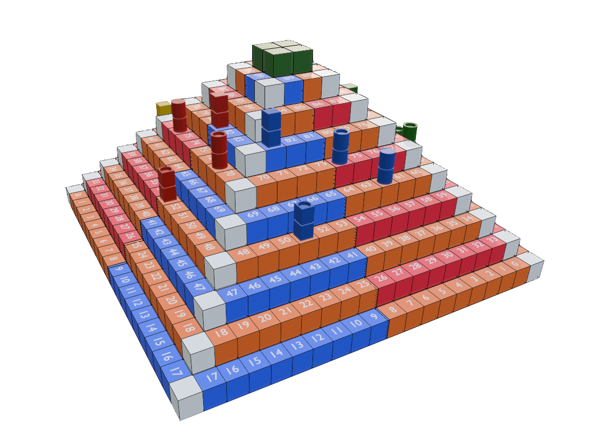
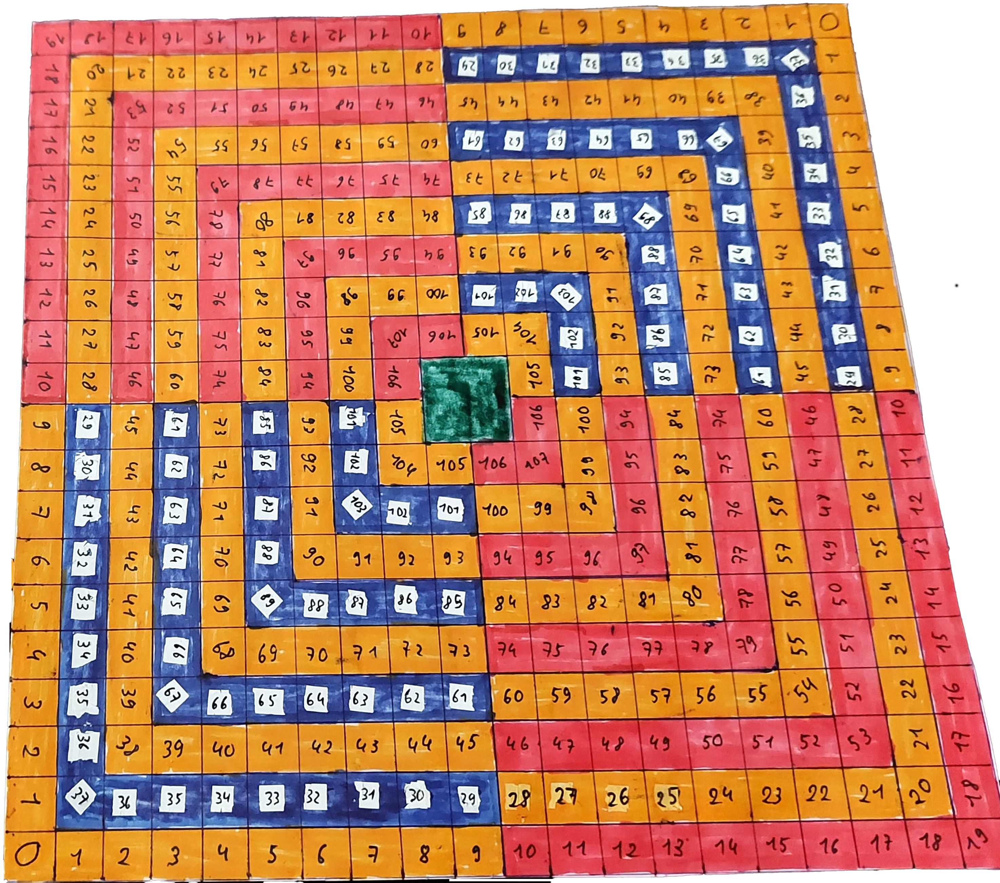
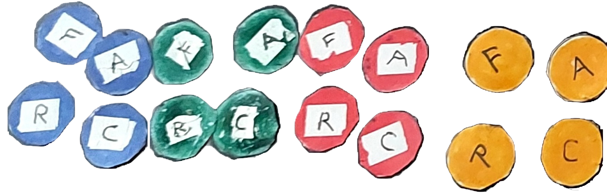

Concept de jeu de société "Ascension au Panthéon" - 2026
Game Design
Dans le cadre du concours pour intégrer l'école du CNAM-Enjmin, j'ai dû concevoir un jeu de société basé sur le thème de l'ascension.
Présentation
Ascension au Panthéon est un jeu de société utilisant des dés, combinant adresse et chance, qui consiste à faire l'ascension d'une pyramide pour rejoindre le Panthéon divin. Il a été imaginé dans le cadre du concours d'intégration à la Licence professionnelle métiers du jeu vidéo parcours game design au Cnam-Enjmin Chaque joueur joue un personnage qui aspire à devenir un dieu et qui doit pour cela surpasser ses adversaires lors d'un parcours comportant une série de duels. Il doit faire atteindre le sommet de la pyramide, le Panthéon, à ses 4 acolytes. Chaque acolyte possède un talent particulier et c'est en utilisant le bon acolyte dans la bonne situation que le joueur augmentera ses chances de faire < strong>parvenir en premier tous ses acolytes au sommet de la pyramide.

Matériel
Une pyramide de 10 marches, dont le sommet, et de 108 cases numérotées, le sommet étant alors la 109e case.
- Cases jaunes : cases sécurisées
- Cases rouges : duel de puissance
- Cases bleues : duel de dextérité
- Carré vert : Sommet de la pyramide
Les acolytes :
- (F) Acolyte fort
- (A) Acolyte adroit
- (C) Acolyte chanceux
- (R) Acolyte rapide
3 dés à 6 faces.


Mise en place
Chaque joueur choisit une couleur et prend les 4 acolytes de cette couleur. Chaque joueur lance ensuite les 3 dés et fait la somme des valeurs obtenues. Le joueur qui a le score le plus haut commence la partie. Le joueur avec le deuxième score le plus haut s'assoit à la gauchedu premier et jouera en deuxième, sur la face de la pyramide qui se trouve à gauche de celle du premier joueur. Et ainsi de suite. En cas d'égalité entre deux ou plusieurs joueurs, ces joueurs doivent refaire un jet de 3 dés pour se départager.
Talents des acolytes
Acolyte fort (F)
L'acolyte fort est avantagé lors des duels de puissance (voir section Résolution des duels).
Acolyte adroit (A)
L'acolyte “adroit" est avantagé lors des duels de dextérité (voir section Résolution des duels).
Acolyte chanceux(C)
L'acolyte chanceux est avantagé lors de tout type de duels (voir section Résolution des duels).
Acolyte rapide (R)
Lorsque le joueur veut déplacer un acolyte rapide, il lance alors un troisième dé pour déterminer le nombre de cases qu'il pourra lui faire parcourir (voir section Déplacements).
Déplacements
Le premier joueur lance 2 dés et fait la somme des valeurs obtenues ce qui lui indique le nombre de cases qu'un de ses acolytes pourra parcourir sur la face de sa pyramide, en commençant par la case 1 et en avançant dans le sens de la numérotation (de gauche à droite sur la 1re marche, de droite à gauche sur la deuxième marche, et ainsi de suite).
Attention : il ne peut y avoir qu'un acolyte sur la même case. Si le score indique qu'un acolyte doit rejoindre une case occupée, il devra s'arrêter avant cette case. Selon la situation, il choisit l'acolyte qui lui semble le plus judicieux.
Attention : s'il choisit l'acolyte rapide (R), il a droit de lancer un dé supplémentaire ce qui lui permet d'augmenter le nombre de cases que son acolyte pourra parcourir. Pour envoyer un acolyte sur la case verte sommet, la 109e case, il est nécessaire de faire un score de dés égal ou supérieur au nombre de cases restant à parcourir. Le joueur suivant lance à son tour les 2 (ou 3) dés et déplace à son tour son acolyte sur sa face de pyramide.
Déclenchement des duels
Une fois effectués les déplacements d'un acolyte de chaque joueur, certaines situations conduisent au déclenchement de duels : Les acolytes de deux faces voisines se trouvent sur la même marche, chacun sur une case rouge ou sur une case bleue. S'ils sont sur une case rouge, ils devront effectuer un duel de puissance. S'ils sont sur une case bleue, ils devront effectuer un duel de dextérité. Si deux acolytes ou plus ont atteint le sommet,, le premier joueur à avoir placé un acolyte au sommet lance un dé. S'il obtient 1, 2 ou 3, les joueurs devront se livrer à un duel de puissance. S'il obtient 4, 5 ou 6, les joueurs devront se livrer à un duel de dextérité. Si un seul joueur a placé un acolyte au sommet, celui-ci atteint le Panthéon et sort du jeu. Il reste au joueur à y emmener les acolytes restants.
Résolution des duels : Duel de puissance
Chaque joueur impliqué lance 2 dés, en fait la somme pour déterminer la puissance de son acolyte. L'ordre des lancers n'a pas d'importance.
Attention : Un joueur qui a impliqué un acolyte fort (F) lance 3 dés au lieu de 2 pour déterminer sa puissance.
Attention : Un joueur qui a impliqué un acolyte chanceux (C) peut relancer le dé avec la plus faible valeur pour déterminer sa puissance. L'acolyte avec la puissance la plus faible tombe d'une marche dans la case immédiatement en dessous. Si plus de 2 joueurs sont impliqués dans un test de puissance
le premier round du duel fait tomber l'acolyte avec la plus faible puissance.
Un nouveau round démarre ensuite et les joueurs relancent les dés pour déterminer la nouvelle puissance de leur acolyte.
L'acolyte le moins puissant tombe d'une marche dans la case immédiatement en dessous, ou dans la case précédente si la case du dessous est occupée par un autre acolyte. Et ainsi de suite, jusque'à ce qu'il ne reste plus qu'un acolyte sur la case. S'il s'agit du sommet, cet acolyte peut alors rejoindre le Panthéon et sortir du jeu.
Résolution des duels : Duel de dextérité
Il s'agit ici d'un test d'adresse qui peut comporter de 1 à 3 rounds. Au premier round, chaque joueur place chacun son tour un dé entre le majeur et l'index, le lance et doit le rattraper dans sa main.
Tous les joueurs qui échouent voient leur acolyte tomber d'une marche dans la case immédiatement inférieure.
Tous les joueurs qui réussissent restent pour le round suivant.
S'il reste plus d'un joueur, le deuxième round s'effectue avec 2 dés. Un dé est placé entre le majeur et l'index, le deuxième entre l'index et l'annulaire. Il faut alors rattraper les 2 dés pour ne pas voir son acolyte tomber.
S'il reste des joueurs dont l'acolyte n'est pas tombé, le troisième round s'effectue avec 3 dés (entre le majeur et l'index, entre l'index et l'annulaire et entre l'annulaire et le petit doigt). Il faut alors rattraper les 3 dés. S'il reste des joueurs après le troisième round, leurs acolytes restent à leur place et pourront se déplacer au tour suivant.
Attention : Un joueur qui a impliqué un acolyte adroit (A) peut placer les dés sur ses doigts au lieu de les placer entre ses doigts ce qui facilite l'exercice.
Attention : Un joueur qui a impliqué un acolyte chanceux (C) peut tenter une deuxième fois chaque lancer, s'il échoue au premier.